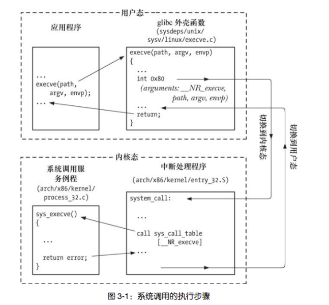
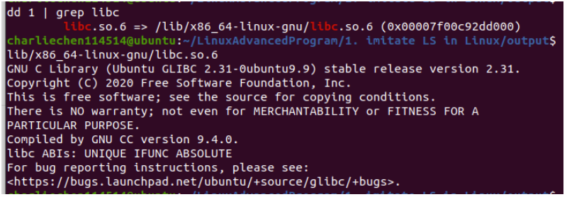

Linux漫游——系统调用
Linux漫游
系统调用概念
3.1 系统调用
系统调用是受控的内核入口，借助于这一机制，进程可以请求内核以自己的名义去执行某些动作。以应用程序编程接口（API）的形式，内核提供有一系列服务供程序访问。
也就是说，我们将底层的一些操作封装起来，构成了系统函数。
在深入系统调用的运作方式之前，务必关注以下几点。
- 系统调用将处理器从用户态切换到核心态，以便 CPU 访问受到保护的内核内存。
- 系统调用的组成是固定的，每个系统调用都由一个唯一的数字来标识。（程序通过名称来标识系统调用，对这一编号方案往往一无所知。）
- 每个系统调用可辅之以一套参数，对用户空间（亦即进程的虚拟地址空间）与内核空间之间（相互）传递的信息加以规范。
下面以一个具体的硬件平台—x86-32 为例，按事件发生的顺序对这些步骤加以分析。
1． 应用程序通过调用 C 语言函数库中的外壳（wrapper）函数，来发起系统调用。
2． 对系统调用中断处理例程（稍后介绍）来说，外壳函数必须保证所有的系统调用参数可用。通过堆栈，这些参数传入外壳函数，但内核却希望将这些参数置入特定寄存器。因此，外壳函数会将上述参数复制到寄存器。
3． 由于所有系统调用进入内核的方式相同，内核需要设法区分每个系统调用。为此，外壳函数会将系统调用编号复制到一个特殊的 CPU 寄存器（%eax）中。
4． 外壳函数执行一条中断机器指令（int 0x80），引发处理器从用户态切换到核心态，并执行系统中断 0x80 (十进制数 128)的中断矢量所指向的代码。
5． 为响应中断 0x80，内核会调用 system _call()例程（位于汇编文件 arch/i386/entry.S 中）来处理这次中断，具体如下。
a）在内核栈中保存寄存器值（参见 6.5 节）。
b）审核系统调用编号的有效性。
c）以系统调用编号对存放所有调用服务例程的列表（内核变量 sys _call _table）进行索引，发现并调用相应的系统调用服务例程。若系统调用服务例程带有参数，那么将首先检查参数的有效性。例如，会检查地址指向用户空间的内存位置是否有效。随后，该服务例程会执行必要的任务，这可能涉及对特定参数中指定地址处的值进行修改，以及在用户内存和内核内存间传递数据（比如，在 I/O 操作中）。最后，该服务例程会将结果状态返回给 system _call()例程。
d）从内核栈中恢复各寄存器值，并将系统调用返回值置于栈中。
e）返回至外壳函数，同时将处理器切换回用户态。
6． 若系统调用服务例程的返回值表明调用有误，外壳函数会使用该值来设置全局变量 errno（参见 3.4 节）。然后，外壳函数会返回到调用程序，并同时返回一个整型值，以表明系统调用是否成功。

我们用execve这个函数举个例子。可以看到上图。
3.2 库函数
设计库函数是为了提供比底层系统调用更为方便的调用接口。而库函数自己的功能也是丰富多样的。
3.3 标准 C 语言函数库；GNU C 语言函数库（glibc）标准 C 语言
GNU C 语言函数库（glibc, http://www.gnu.org/software/libc/）是 Linux 上最常用的实现。确定glibc的方法很简答——我们只需要反解析依赖库，再查看版本即可
dd file | grep libc
3.4 处理来自系统调用和库函数的错误
几乎所有的库函数都会返回状态值。要了解调用是否成功，必须坚持对状态值进行检查。若调用失败，那么必须采取相应行动。至少，程序应该显示错误消息，警示有意想不到的事件发生。
处理系统调用错误
每个系统调用的手册页记录有调用可能的返回值，并指出了哪些值表示错误。一般的，我们指出-1是一个常见的出错值。
另一方面，全局的errno值就会被设置以表示当前出错的状态和原因
程序应包含
函数 perror()会打印出其 msg 参数所指向的字符串，紧跟一条与当前 errno 值相对应的消息。（简单的理解为前置信息——是啥引发了错误呢？）
函数 strerror()会针对其 errnum 参数中所给定的错误号，返回相应的错误字符串
strerror()所返回的字符串可以是静态分配的，这意味着后续对 strerror()的调用可能会覆盖该字符串。对于无法找到的，则会返回未知错误。
处理来自库函数的错误
- 某些库函数返回错误信息的方式与系统调用完全相同—返回值为−1，伴之以 errno号来表示具体错误。remove()便是其中一例，可使用该函数来删除文件（调用 unlink()系统调用）或目录（调用 rmdir()系统调用）。对此类函数所发生的错误进行诊断，其方式与系统调用完全相同。
- 某些库函数在出错时会返回−1 之外的其他值，但仍会设置 errno 来表明具体的出错情况。例如，fopen()在出错时会返回一个 NULL 指针，还会根据出错的具体底层系统调 用来设置 errno。函数 perror()和 strerror()都可用来诊断此类错误
- 还有些函数根本不使用 errno。对此类函数来说，确定错误存在与否及其起因的方法各不相同，可见诸于相应函数的手册页中，不应使用 errno、perror()或 strerror()来诊断错误。
换而言之，使用函数之前务必参考手册！
系统数据类型
| 数据类型 | 类型要求 | 描述 |
|---|---|---|
| blkcnt_t | 有符号整型 | 文件块数量 |
| blksize_t | 有符号整型 | 文件块大小 |
| cc_t | 无符号整型 | 终端特殊字符 |
| clock_t | 整型或者浮点型实数 | 以时钟周期计量的系统时间 |
| clockid_t | 运算类型之一 | 时钟和定时器函数的时钟标识符 |
| comp_t | SUSv3未作规范 | 经由压缩处理的时钟周期 |
| dev_t | 运算类型之一 | 设备号，包括主/次设备号 |
| DIR | 无类型要求 | 目录流 |
| fd_set | 结构类型 | select()中的文件描述符集 |
| fsblkcnt_t | 无符号整型 | 文件系统块数量 |
| fsfilcnt_t | 无符号整型 | 文件数量 |
| gid_t | 整型 | 数值型组标识符 |
| id_t | 整型 | 用以存放标识符的通用类型，其大小至少可放置pid_t，uid_t和gid_t类型 |
| in_addr_t | 32位无符号整型 | IPv4地址 |
| in_port_t | 16位无符号整型 | IP端口号 |
| ino_t | 无符号整型 | 文件i-node号 |
| key_t | 运算类型之一 | System V IPC键 |
| mode_t | 整型 | 文件权限及类型 |
| mqd_t | 无类型要求，但是不能为数组类型 | 消息队列描述符 |
| msglen_t | 无符号整型 | 消息队列所允许的字节数 |
| msgqnum_t | 无符号整型 | 消息队列中的消息数量 |
| nfds_t | 无符号整型 | poll()中文件描述符数量 |
| nlink_t | 整型 | 文件的（硬）连接数量 |
| off_t | 有符号整型 | 文件偏移量或大小 |
| pid_t | 有符号整型 | 进程ID，进程组ID或会话ID |
| ptrdiff_t | 有符号整型 | 两指针差值，为有符号整型 |
| rlim_t | 无符号整型 | 资源限制 |
| sa_family_t | 无符号整型 | 套接字地址族 |
| shmatt_t | 无符号整型 | 与System V共享内存段相连的进程数量 |
| sig_atomic_t | 整型 | 可进行原子访问的数据类型 |
| siginfo_t | 结构类型 | 信号起源的相关信息 |
| sigset_t | 整型或者结构类型 | 信号集合 |
| size_t | 无符号整型 | 对象大小 |
| socklen_t | 至少32位的整型 | 套接字地址结构大小（以字节计数） |
| speed_t | 无符号整型 | 终端线速度 |
| ssize_t | 有符号整型 | 字节数或（为负时）标识错误 |
| stack_t | 结构类型 | 对备选信号栈的描述 |
| suseconds_t | 有符号整型，范围为[-1~1000000] | 微秒级的时间间隔 |
| tcflag_t | 无符号整型 | 终端模式标志位的位掩码 |
| time_t | 整型或者浮点型实数 | 自纪元开始，以秒计的日历时间 |
| timer_t | 运算类型之一 | 间隔定时器函数的定时器标识符 |
| uid_t | 整型 | 数组型用户标识符 |
注意到——我们常常需要显示他们当中的类型，这里建议查阅完typedef之前的类型，再实际使用的时候先强制转化。可以有效避免不同系统实现问题
Summury
系统调用允许进程向内核请求服务。与用户空间的函数调用相比，哪怕是最简单的系统调用都会产生显著的开销，其原因是为了执行系统调用，系统需要临时性地切换到核心态，此外，内核还需验证系统调用的参数、用户内存和内核内存之间也有数据需要传递。
标准的 C 语言函数库提供了大量库函数，功能五花八门。有些库函数会利用系统调用来完成工作，而另一些库函数则完全在用户空间内执行任务。在 Linux 上，一般情况下，使用 glibc作为 C 语言标准库的实现。大多数系统调用和库函数都会返回一个状态值，以表明调用成功与否。对这一返回状态进行检查是一条编程铁律。为本书的程序示例还实现有一批函数。其所执行的任务包括诊断错误和解析命令行参数。
本章也提供了一系列指南及技术，以帮助读者编写可移植的系统程序，此类程序可在任何符合标准的系统上运行。编译应用程序时，可定义不同的特性测试宏，以控制头文件显露对特定标准的定义。当希望确保程序符合某些正式或由实现定义的标准时，上述做法可谓是非常实用。
利用定义于各个标准中（而非原生 C 语言类型）的系统数据类型，能够改善系统编程的可移植性。SUSv3 定义有大量系统数据类型，UNIX 实现应加以支持，应用程序应予以采用。